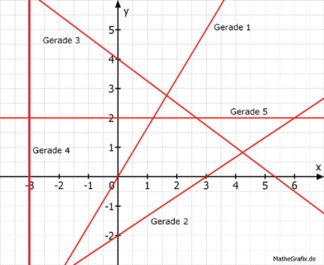

Lineare Funktionen Aufgabe 61 Wie lauten die Funktionsgleichungen der einzelnen Geraden?  Gerade 1: 2 Punktkoordinaten abgelesen: P1(0|0) x1 y1 P2(3|5) x2 y2 y2 - y1 5 - 0 5 m = -------- = ------- = --- x2 - x1 3 - 0 3 b = 0 5 y = --- x 3 b) Gerade 2: 2 Punktkoordinaten abgelesen: P1(3|0) x1 y1 P2(0|-2) x2 y2 y2 - y1 -2 - 0 -2 2 m = --------- = --------- = ---- = --- x2 - x1 0 - 3 -3 3 b = -2 2 y = --- x - 2 3 c) Gerade 3: 2 Punktkoordinaten abgelesen: P1(0|4) x1 y1 P2(4|1) x2 y2 y2 - y1 1 - 4 -3 3 m = --------- = -------- = ---- = - --- x2 - x1 4 - 0 4 4 b = 4 3 y = - --- x + 4 4 d) Gerade 5: x = -3 Zu jedem y gehört x = - 3. e) Gerade 4: y = 2 Zu jedem x gehört y = 2.